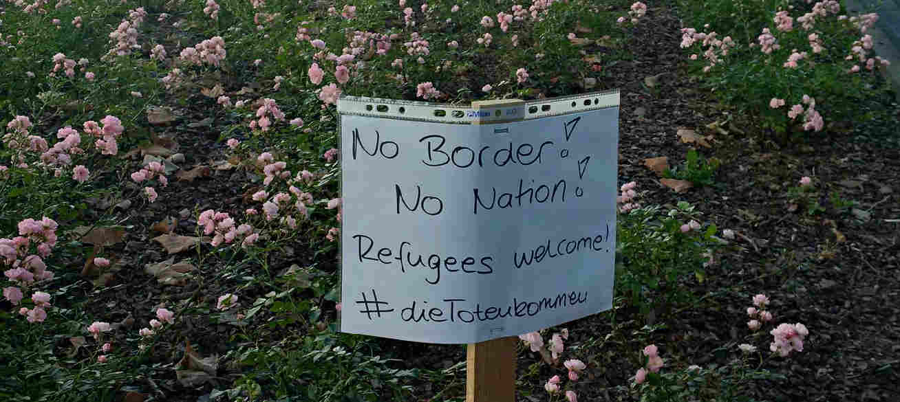

POW
Papst Franziskus entzieht Wolfdieter Weiß, ehemals Pfarrer in Eichenbühl und später in Miltenberg, alle Rechte und Pflichten eines Priesters. Das Bistum Würzburg (POW – Pressedienst Ordinariat Würzburg) schreibt dazu:
Papst Franziskus hat einem Ruhestandspriester der Diözese Würzburg wegen sexuellen Missbrauchs Minderjähriger mit sofortiger Wirkung alle Rechte und Pflichten entzogen, die mit dem Klerikerstand verbunden sind. Damit ist der 75-jährige Wolfdieter W., der zeitweise auch im Bistum Limburg und im Erzbistum Bamberg tätig war, aus dem Klerikerstand entlassen. Das Schreiben vom 26. Juni 2015 ist vom Präfekten der römischen Kongregation für die Glaubenslehre, Gerhard Kardinal Müller, unterzeichnet. Es wurde Bischof Dr. Friedhelm Hofmann über die Apostolische Nuntiatur in Berlin zugestellt. Bischof Hofmann, Generalvikar Thomas Keßler und Offizial Dr. Stefan Rambacher teilten dem Priester die Entscheidung am Donnerstag, 30. Juli 2015, im Bischöflichen Ordinariat Würzburg mit. Gegen den Ausschluss aus dem Klerikerstand kann der Betroffene keine Rechtsmittel einlegen.
(mehr…)
Hier ein Video dazu aus der BR Mediathek.
Redaktion kommunal
Tumulte beim Besuch von Claudia Roth in Goldbach: NPD-Anhänger haben offenbar versucht, im Saal ein Banner mit Parolen zu entrollen. Es kam zu Handgreiflichkeiten, bis die Störenfriede aus dem Saal geworfen wurden. Unser Reporter hat die Szenen mit der Kamera festgehalten. Auch die Polizei ist mittlerweile vor Ort.
postet die Facebookseite von Main-Netz gestern Abend und stellte ein kurzes Video online das sich auch auf Main-Echo.de ansehen lässt. Laut Polizei-Unterfranken wurden Ermittlungen aufgenommen. Die Ereignisse des Abends lassen sich im Live-Ticker der Veranstaltung nachlesen. Eine ausführliche Berichterstattung von Seiten des Main-Echos ist für Mittwoch angekündigt.
Die menschenverachtenden Kommentare die Artikel und Veranstaltungen zum Thema Asyl mit sich bringen, werden wir im Moment nicht kommentieren. Jedem der sich selbst ein Bild machen möchte wird empfohlen auf der oben genannten Facebook-Seite unter entsprechenden Posts nachzusehen.
Allgemeine Informationen zum Inhalt und Verlauf eines schaurigen Goldbach-Abends -bereits 2014- lieferte das Main-Echo in diesem Artikel.

Dokument aus dem attac-Verteiler Aschaffenburg-Miltenberg
Liebe Leute,
Alle sind jetzt gefragt, Solidarität zu zeigen. Die griechische Regierung und die sozialen Bewegungen sagen laut „NEIN!“ zur erpresserischen, für viele Menschen lebensbedrohenden Verelendungspolitik. Sie stellen sich mutig und verzweifelt gegen die Forderungen der Gläubiger. Den „Institutionen“ und der deutschen Großen Koalition war nicht einmal der weitgehende Kompromissvorschlag Griechenlands genug, sie fordern Verschärfungen, die die soziale Katastrophe vergrößern. Anscheinend wollen sie nur eines: die griechische Regierung stürzen und den Neoliberalismus verteidigen. In einem Referendum am Sonntag entscheidet die Bevölkerung, ob sich die Regierung weiter der Austeritätspolitik wiedersetzen wird. Dies ist in jedem Fall eine Entscheidung unter den Bedingungen schwerer Erpressung durch die Troika und die Bundesregierung. Mit einem „NEIN!“ sagen Menschen in ihrer Verzweiflung, dass sie lieber eine ungewisse Zukunft möchten als gar keine, dass sie sich auf zwei Jahre Bohnen essen einstellen, damit dieses Elend aufhört.
(mehr…)
Kommentar von 안드레아스
„Come in and find out“: Komm herein und finde heraus. So verstehen viele deutsche „Native Speaker“ das Englisch einer großen Parfümeriekette.
„No Woman, no Cry“. „Keine Frau, kein Geschrei“, denken sich im Deutschen aufgewachsene Männer, wenn sie Bob Marleys lauschen. Und weil sie ihr Schulenglisch Wort für Wort übersetzen, kommen sie nicht auf den Gedanken, dass ihre Ad-hoc-Übersetzung grundlegend falsch ist.
„Nein Frau, weine nicht“ wäre richtig(er) und bedeutet fast das Gegenteil.
Wer Englisch Deutschen vorsetzt, mag ein Problem mit Deuschen haben oder sich einfach aufwerten wollen, geht aber immer das Risiko ein, völlig falsch verstanden zu werden.
Hinter Aschaffenburgs City Galerie sah ich heute ein Schild:
„No border! No Nation! Refugees welcome! #dieTotenkommen“

Warum in Englisch? Ist die Nachricht an hiergebliebene US-amerikanische Soldaten gerichtet? Sind die so flüchtlingsfeindlich?
(mehr…)